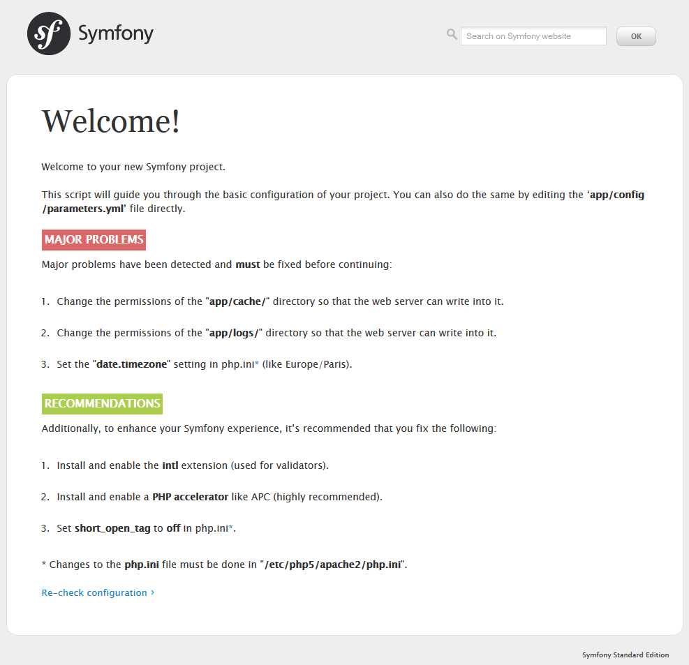
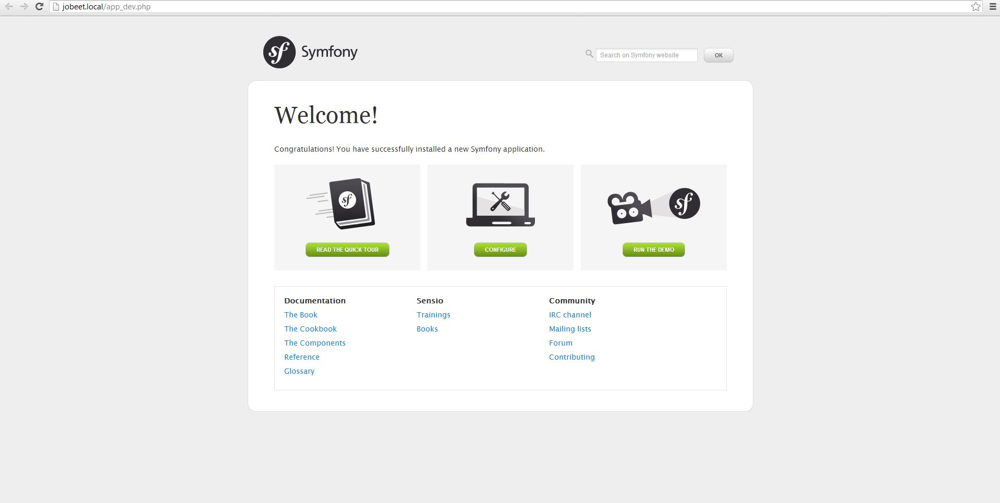

1. 1日目: プロジェクトを始める¶
- この記事は Symfony 1.4 向けのオリジナルの Jobeet Tutorial の一部分です。
1.1. Jobeet とは¶
1.2. 開発環境のセットアップ¶
Webサーバー Apache をインストールします。:
$ sudo apt-get install apache2次に、 Apache mod-rewrite を有効にします。
$ sudo a2enmod rewriteMySQLサーバをインストールします。
$ sudo apt-get install mysql-server mysql-clientサーバースクリプト言語、 PHP をインストールします。
$ sudo apt-get install php5 libapache2-mod-php5 php5-mysql国際化拡張機能をインストールします。
$ sudo apt-get install php5-intlここで、Apache サービスを再起動する必要があります。
$ sudo service apache2 restart
1.3. Symfony 2.3.2 のダウンロードとインストール¶
$ mkdir /var/www/jobeet
1.3.1. Vendors の更新¶
$ curl -s https://getcomposer.org/installer | php
curl 拡張をインストールしていない場合は、このコマンドを使用してインストールすることができます。
$ sudo apt-get install curl
次に、必要なすべてのベンダー·ライブラリのダウンロードを開始するには、次のコマンドを入力します。
$ php composer.phar install
1.4. Web サーバーの設定¶
$ sudo nano /etc/apache2/sites-available/jobeet.local
これで、 jobeet.local という名前のファイルが作成されます。以下をそのファイルの中に追記し、Control – O を選択し、それを保存します。その後、 Control – X でエディタを終了します。
/etc/apache2/sites-available/jobeet.local
<VirtualHost *:80>
ServerName jobeet.local
DocumentRoot /var/www/jobeet/web
DirectoryIndex app.php
ErrorLog /var/log/apache2/jobeet-error.log
CustomLog /var/log/apache2/jobeet-access.log combined
<Directory "/var/www/jobeet/web">
AllowOverride All
Allow from All
</Directory>
</VirtualHost>
127.0.0.1 jobeet.local
Tip
リモート·サーバーで作業している場合には、127.0.0.1をWebサーバー·マシンのIPで置き換えてください。
$ sudo a2ensite jobeet.local
$ sudo service apache2 restart
http://jobeet.local/config.php
ローカルホストからこれを実行しない場合、web/config.php ファイルを開いてローカルホストの外部からのアクセスを制限する行をコメントにします。
web/config.php
if (!isset($_SERVER['HTTP_HOST'])) {
exit('This script cannot be run from the CLI. Run it from a browser.');
}
/*
if (!in_array(@$_SERVER['REMOTE_ADDR'], array(
'127.0.0.1',
'::1',
))) {
header('HTTP/1.0 403 Forbidden');
exit('This script is only accessible from localhost.');
}
*/
// ...
web/app_dev.php に対しても同じことを行います。
web/app_dev.php
use Symfony\Component\HttpFoundation\Request;
use Symfony\Component\Debug\Debug;
// If you don't want to setup permissions the proper way, just uncomment the following PHP line
// read http://symfony.com/doc/current/book/installation.html#configuration-and-setup for more information
//umask(0000);
// This check prevents access to debug front controllers that are deployed by accident to production servers.
// Feel free to remove this, extend it, or make something more sophisticated.
/*
if (isset($_SERVER['HTTP_CLIENT_IP'])
|| isset($_SERVER['HTTP_X_FORWARDED_FOR'])
|| !in_array(@$_SERVER['REMOTE_ADDR'], array('127.0.0.1', 'fe80::1', '::1'))
) {
header('HTTP/1.0 403 Forbidden');
exit('You are not allowed to access this file. Check '.basename(__FILE__).' for more information.');
}
*/
$loader = require_once __DIR__.'/../app/bootstrap.php.cache';
Debug::enable();
require_once __DIR__.'/../app/AppKernel.php';
// ...
おそらく、config.php を開くことですべての種類の必要条件を取得できるでしょう。以下は、それらすべての warnings が出ないようにする作業リストです。
app/cache と、app/logs のパーミッションを変更します。
sudo chmod -R 777 app/cache sudo chmod -R 777 app/logs sudo setfacl -dR -m u::rwX app/cache app/logs
まだ ACL を持っていない場合はインストールします。
sudo apt-get install acl
php.iniで date.timezone を設定します
/etc/php5/apache2/php.ini
date.timezone = Europe/Bucharest
sudo nano /etc/php5/apache2/php.ini
[date] セクションの date.timezone を見つけて、タイムゾーンを設定します。その後、”;” を削除し、行の先頭に配置します。
同じ php.ini ファイルで short_open_tag をオフに設定します。
/etc/php5/apache2/php.ini
PHP アクセラレータ（APC推奨）をインストールし有効にします。
sudo apt-get install php-apc sudo service apache2 restart
Apache を再起動した後、 ブラウザを開き http://jobeet.local/app_dev.php とタイプします。次のページが表示されます。

1.5. Symfony2 のコンソール¶
$ php app/console list
1.6. Application Bundle の作成¶
1.6.1. bundleとは正確には何か¶
Note
バンドルはオートロード（ app/autoload.php ）される限りどこにでも設置できます。
Note
ここに詳細を読むことができます。 バンドルシステム http://symfony.com/doc/current/book/page_creation.html#the-bundle-system
1.6.2. 基本的 bundle スケルトンの作成¶
Symfony のバンドルジェネレーターを開始するには、次のコマンドを実行します。
$ php app/console generate:bundle --namespace=Ibw/JobeetBundle
ジェネレーターは、バンドルを生成する前にいくつか質問をします。ここでの質問と回答（ 1 つを除くすべてがデフォルトの答え）は次のとおりです。
Bundle name [IbwJobeetBundle]: IbwJobeetBundle
Target directory [/var/www/jobeet/src]: /var/www/jobeet/src
Configuration format (yml, xml, php, or annotation) [yml]: yml
Do you want to generate the whole directory structure [no]? yes
Do you confirm generation [yes]? yes
Confirm automatic update of your Kernel [yes]? yes
Confirm automatic update of the Routing [yes]? yes
新しいバンドルを生成した後にキャッシュをクリアします。
$ php app/console cache:clear --env=prod
$ php app/console cache:clear --env=dev
1.6.3. AcmeDemoBundle の削除の仕方¶
Acme ディレクトリを削除するコマンドを入力します。
$ rm -rf /var/www/jobeet/src/Acme/var/www/jobeet/app/AppKernel.php を開いて行の削除をします。
app/AppKernel.php
// ... $bundles[] = new Acme\DemoBundle\AcmeDemoBundle(); // ...
そして app/config/routing_dev.yml から削除します。
app/config/routing_dev.yml
# ... # AcmeDemoBundle routes (to be removed) _acme_demo: resource: "@AcmeDemoBundle/Resources/config/routing.yml"
最後に、キャッシュをクリアします。
1.7. 環境¶
Note

このチュートリアルは、クリエイティブ・コモンズ・ライセンス 表示 - 継承 3.0 非移植 (CC BY-SA 3.0) のもとでライセンスされています。 翻訳の元にしたオリジナルはこちらです。 Symfony2 Jobeet http://www.intelligentbee.com/blog/tag/symfony2-jobeet/.